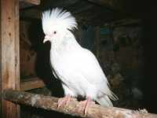
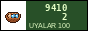
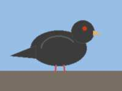
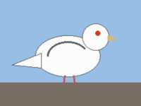

| ГОЛУБИ НУРЖАНАPIGEONS OF NURZHAN · tumblers · since 1961 |
Главная / Main | Породы / Breeds | Советы / Advice | Guestbook

 | Мои породы / My breeds
| Узбекские двухчубые (Uzbek double-crested)
The pride of Central Asia. Feet in feathers, two crests, beautiful "boi". White, red, black-tailed. |
 | Бакинские (Baku tumblers)
Fly very high, out of sight. Strong and clever. My best ones are from a man in Sumgait (by train, 1986!). |
 | Кобозевские белые (Kobozev white)
Our local breed, made by the old fanciers of Dastgoh in the 1960s from Uzbek and Kazakh birds. Only white, short beak, clean feet. Almost lost. I have 6 pairs. |
Sale of young birds: in autumn, 50–300 som a pair. Call in the evening. |
| Михаил Иванович Горшков, Нуржан, Дастгох. Тел. 3-41-17 (вечером). Site: grandson Denis. |